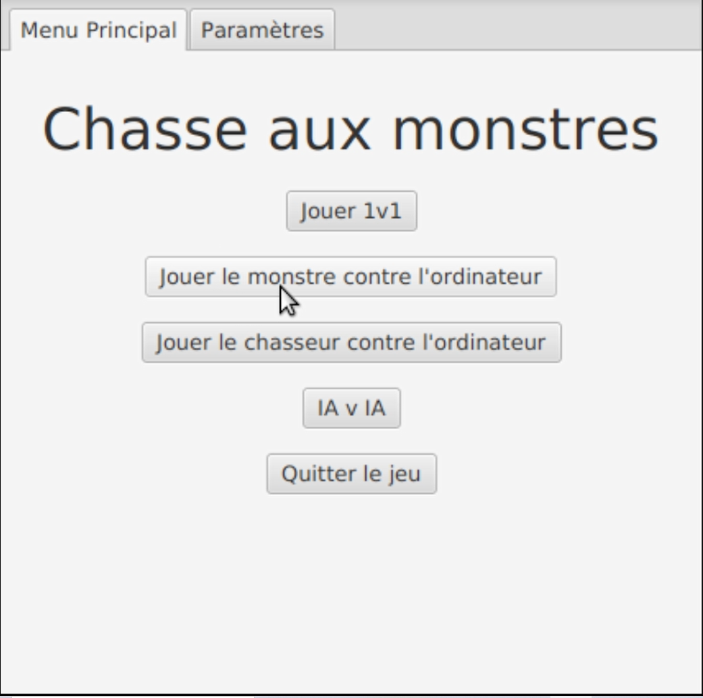
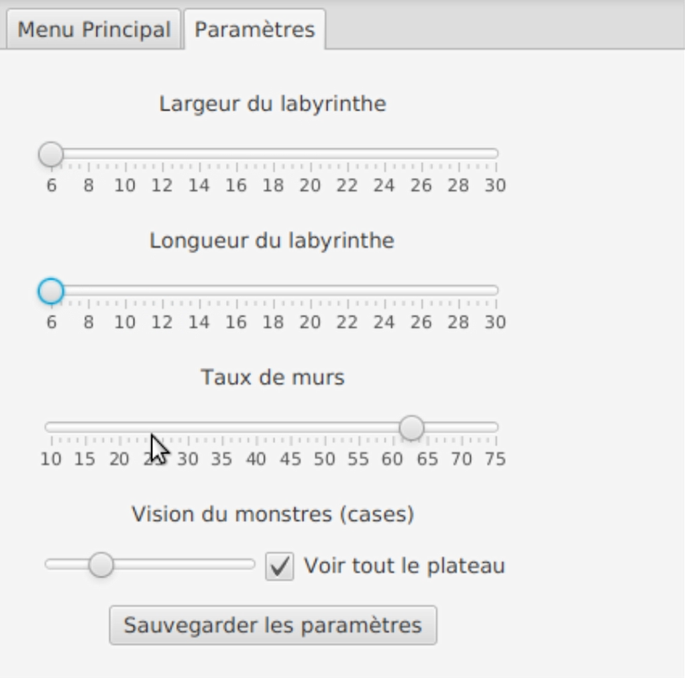
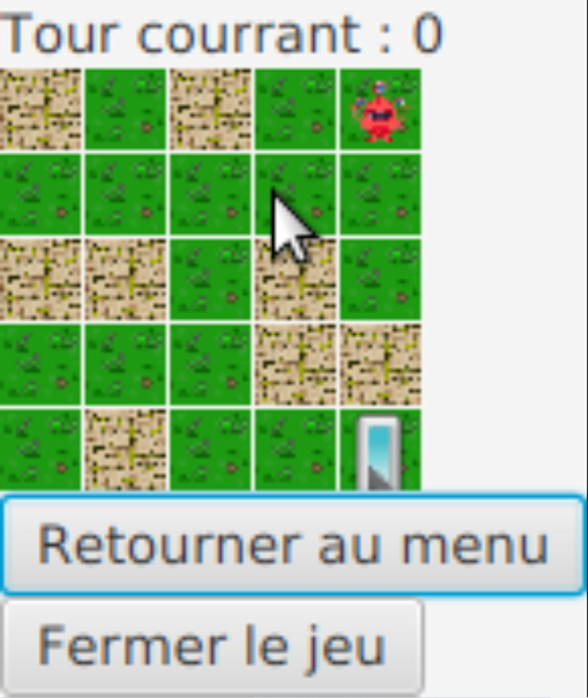
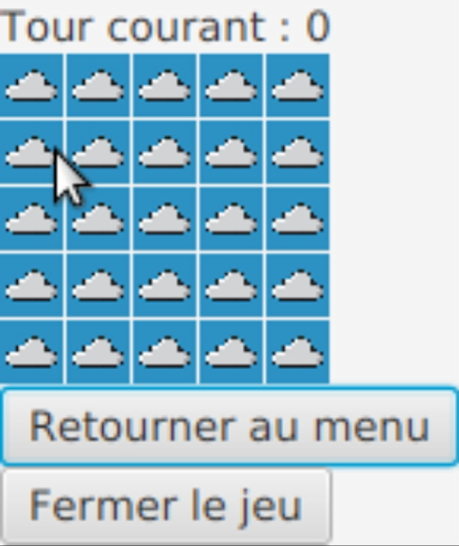

.
Voici la chasse aux monstres, c'est un projet à 3 personnes en Java qui utilise JavaFx pour ce concentré sur la méthode de production. Ce projet à été réalisé en fin de 3ème Semestre, mettant en avant le modèle MVC.
Le principe du jeu c'est un monstre dans un labyrinthe qui doit trouver la sortie avant que le chasseur ne lui tir dessus en se basant sur la visibilité des deux personnages et de leurs environnements. Le labyrinthe est paramétrable de beaucoup de façon et il se génère aléatoirement. Je me suis personnellement occupé de développer un algorithme de génération de labyrinths qui gère les paramètres de travail et de taux de remplissage des murs.
D'un point de vue éducatif, l'utilisation du modèle MVC a grandement impacté la façon de concevoir avec JavaFx. La qualité de développement a fortement été mis en avant. Cela a permis une très bonne gestion du travail en groupe, le développement d'algorithmes était également au coeur du projet. J'ai développé ma capacité à se concentrer sur une tâche, la création d'algorithmes, le travail d'équipe et la prise de décision audacieuses.
-> Menu Principale
-> Choix des paramètres du labyrinthe
-> Le monstre
-> Le chasseur
